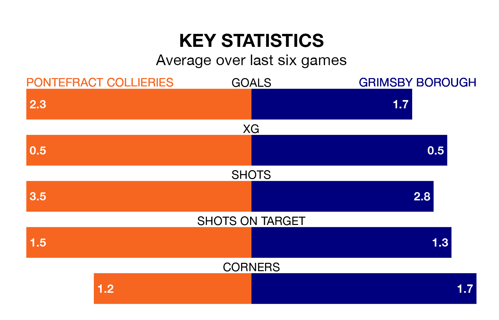

Grimsby Borough travel to Pontefract Collieries on Saturday in the Northern Premier League Division One East.
The visitors come into the game on the back of a defeat in their last match, having lost to Hebburn Town 3-0 at home.
Pontefract Collieries, meanwhile, won their last match, 4-1 against Brighouse Town.
With 59 goals in 32 games so far this season, Pontefract Collieries are scoring more than average in the league with 1.8 goals per game. And they are conceding fewer than average, letting in 35 goals at a rate of 1.1 per game.
Grimsby, meanwhile, are below average scorers, with 1.4 goals per game, compared to a league average of 1.5. They have conceded 1.5 goals per game.
The home side are fifth in the table after 32 games, of which they have won 16 and drawn nine, earning 57 points.
Borough are five places behind Pontefract Collieries in 10th, with 14 wins and five draws putting them on 47 points.
Pontefract Collieries are in good form in the Northern Premier League Division One East, with four wins and a draw from their last six games.
With three wins and a draw over that period, the visitors' form is worse – they have taken 10 points from 18, compared to the hosts' 13.
In the last three years, Pontefract Collieries and Grimsby have played each other on three occasions. Pontefract Collieries won two of them and Grimsby one.
Their last meeting was on November 25, when Pontefract Collieries won 2-1 away.
Updated: 11:31 (UTC), 15/04/24